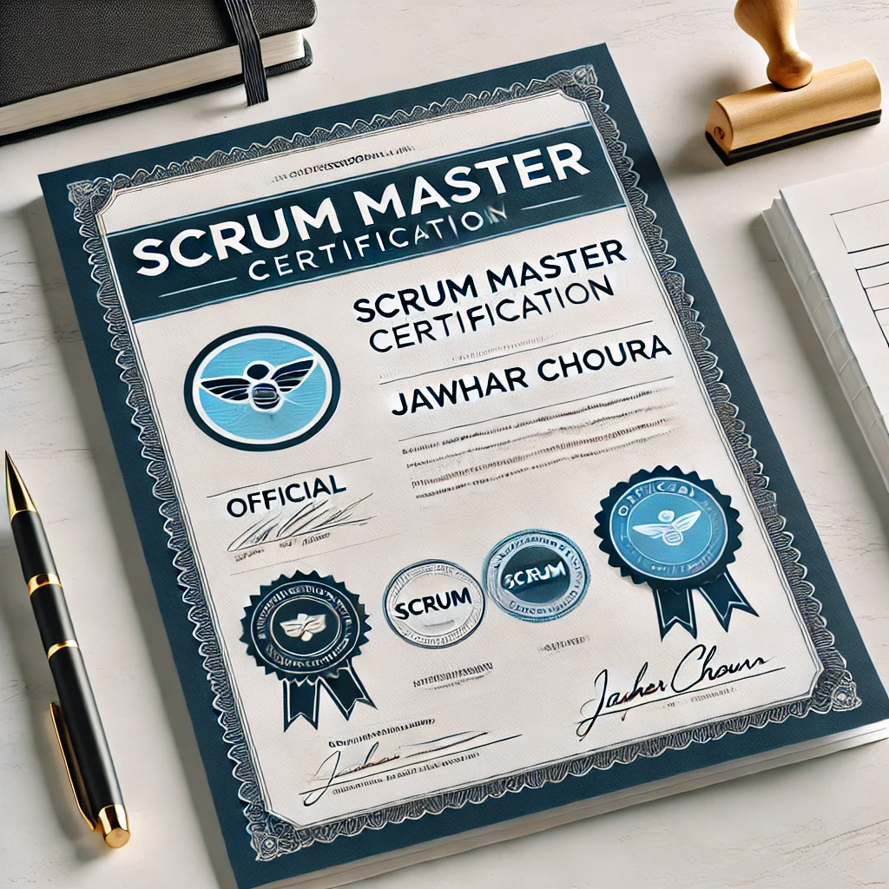

Baccalauréat en Science Technique
Lycée Abou Kacem Echebbi - Obtenu en 2021
Spécialisation en sciences techniques avec une excellente performance dans les matières scientifiques.
Licence en Informatique
Université IIT - Obtenue en 2024
Cette formation m'a permis d'acquérir une solide base en programmation et en développement web.

Certification Scrum Master
Institut DEF - Obtenue en 2023
Cette certification atteste de ma maîtrise des méthodologies agiles et de ma capacité à coordonner des équipes en adoptant les meilleures pratiques Scrum. Elle renforce mes compétences en planification de sprints, gestion de backlog, et amélioration continue.